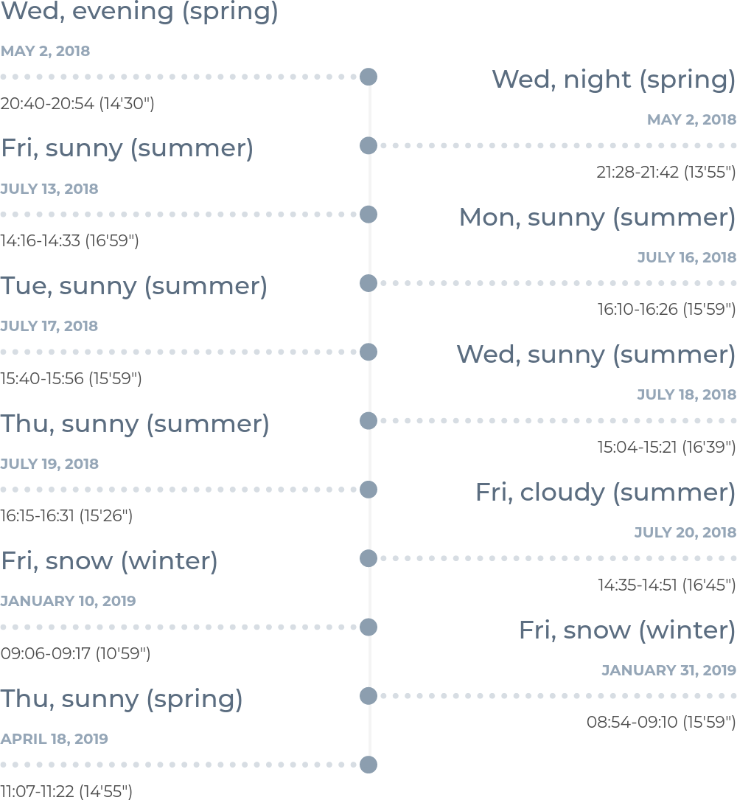
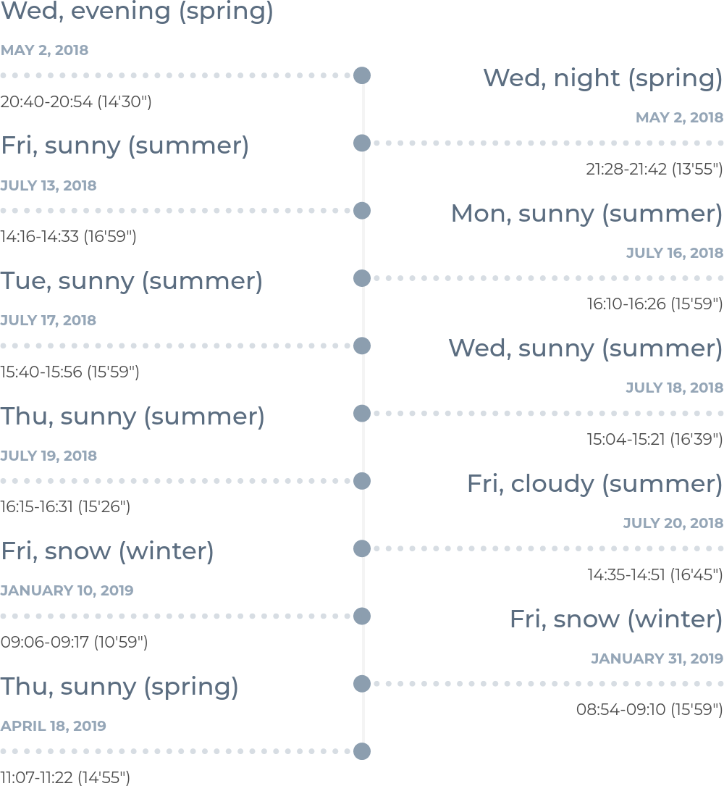
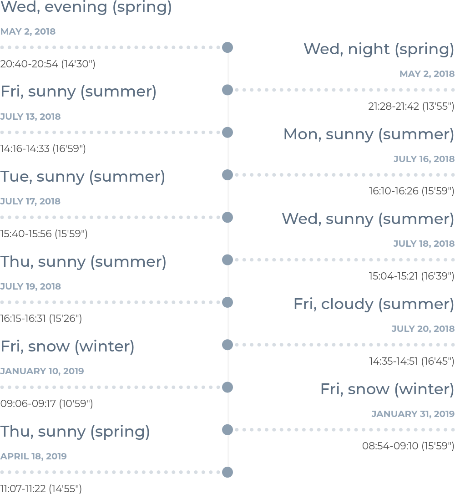

| Description Contributions Citation Recording platform Challenges Downloads How to play Baselines Related work Privacy License Funding Acknowledgment |
😱 2023-05-10: Our data hosting server is experiencing some hardware issues and it will take some time to fix it. Sorry for the inconvenience caused.
😍 2022-06-29: Data and annotations for some challenging scenarios are available!
😎 2021-09-29: We have a new all-in-one download mirror hosted by the Chronorobotics Lab @ CTU.
😉 2021-01-04: Everything is back to normal.
😱 2020-12-19: The data download links are broken due to some unknown cloud server issues, we will check it as soon as possible after our university reopens, and sorry for any inconvenience caused.
😷 2020-03-14: Due to the current context, our university is closed from March 14 2020. As a result, we are affected by this measure and cannot, temporarily, no longer update our dataset. We apologize for any inconvenience caused.
--- Collected by our very own UTBM robocar ---

This dataset was collected with our robocar (in human driving mode of course), equipped with eleven heterogeneous sensors, in the downtown (for long-term data) and suburban (for roundabout data) areas of Montbéliard in France. The vehicle speed was limited to 50 km/h following the French traffic rules. For the long-term data, the driving distance is about 5.0 km (containing a small and a big road loop for loop-closure purpose) and the length of recorded data is about 16 minutes for each collection round. For the roundabout data, the driving distance is about 4.2 km (containing 10 roundabouts with various sizes) and the length of recorded data is about 12 minutes for each collection round. In addition to enjoying the typical scenery of eastern France, users can also feel the daily and seasonal changes in the city. For a quick overview, please refer to the following videos.
This dataset provides:
If you publish work based on, or using, this dataset, we would appreciate citations to the following:
@inproceedings{eu_longterm_dataset,


Our multi-sensor platform design mainly follows two principles: 1) strengthen the visual scope as much as possible, and 2) maximize the overlapping area perceived by multiple sensors. In particular:
For more details, please refer to our paper.
Many new research challenges have been introduced in this dataset, such as:
 |
 |
 |
 |
 |
| sloping road | shared zone | construction bypass | roundabout | night |
 |
 |
 |
 |
 |
| snow | right overtaking* | crossing | pigeon | police |
Please note that all rosbags are compressed, please decompress them as needed.
Camera calibration (done with camera_calibration) files are available here.
| Date | Local Time (Paris) | Sensors | Image Data | Non-image Data |
|---|---|---|---|---|
| 2018-05-02 (Wed, evening) | 20:40-20:54 (14'30") | 2 × Velodyne / ibeo / SICK / IMU / GPS-RTK / Bumblebee XB3 | rosbag | rosbag/ |
| 2018-05-02 (Wed, night) | 21:28-21:42 (13'55") | 2 × Velodyne / ibeo / SICK / IMU / GPS-RTK / Bumblebee XB3 | rosbag | rosbag/ |
| 2018-07-13 (Fri, sunny) | 14:16-14:33 (16'59") | 2 × Velodyne / ibeo / SICK / IMU / GPS-RTK / Bumblebee XB3 / Bumblebee2 | rosbag | rosbag |
| 2018-07-16 (Mon, sunny) | 16:10-16:26 (15'59") | 2 × Velodyne / ibeo / SICK / IMU / GPS-RTK / Bumblebee XB3 / Bumblebee2 | rosbag | rosbag |
| 2018-07-17 (Tue, sunny) | 15:40-15:56 (15'59") | 2 × Velodyne / ibeo / SICK / IMU / GPS-RTK / Bumblebee XB3 / Bumblebee2 | rosbag | rosbag |
| 2018-07-18 (Wed, sunny) | 15:04-15:21 (16'39") | 2 × Velodyne / ibeo / SICK / IMU / GPS-RTK / Bumblebee XB3 / Bumblebee2 / fisheye | rosbag+ | rosbag |
| 2018-07-19 (Thu, sunny) | 16:15-16:31 (15'26") | 2 × Velodyne / ibeo / SICK / IMU / GPS-RTK / Bumblebee XB3 / Bumblebee2 / fisheye | rosbag- | rosbag |
| 2018-07-20 (Fri, cloudy) | 14:35-14:51 (16'45") | 2 × Velodyne / ibeo / SICK / IMU / GPS-RTK / Bumblebee XB3 / Bumblebee2 / fisheye | rosbag | rosbag |
| 2019-01-10 (Fri, snow) | 09:06-09:17 (10'59") | 1 × Velodyne / ibeo / SICK / IMU / Bumblebee XB3 / Bumblebee2 / fisheye | rosbag* | rosbag |
| 2019-01-31 (Fri, snow) | 08:54-09:10 (15'59") | 1 × Velodyne / ibeo / SICK / IMU / GPS / Bumblebee XB3 / fisheye | rosbag* | rosbag |
| 2019-04-18 (Thu, sunny) | 11:07-11:22 (14'55") | 1 × Velodyne / ibeo / SICK / IMU / GPS-RTK / radar / Bumblebee XB3 / Bumblebee2 / fisheye | rosbag | rosbag |
| +Only partial GPS-RTK data. | ||||
| -Best data quality, recommended for evaluation. | ||||
| *Only part of the itinerary recorded due to adverse weather conditions. | ||||
| /You might want to add_header_time_offset.py | ||||
| Date | Local Time (Paris) | Sensors | Image data | Non-image data |
|---|---|---|---|---|
| 2019-04-12 (Fri, cloudy) | 18:14-18:26 (12'10") | 1 × Velodyne / ibeo / SICK / IMU / GPS-RTK / radar / Bumblebee XB3 / Bumblebee2 / fisheye | rosbag | rosbag |
| 2019-04-18 (Thu, sunny) | 12:03-12:15 (11'59") | 1 × Velodyne / ibeo / SICK / IMU / GPS-RTK / radar / Bumblebee XB3 / Bumblebee2 / fisheye | rosbag | rosbag |
| roslaunch utbm_dataset_play.launch bag:=path_to_your_rosbag |
By using the provided launch file, you will have:
https://github.com/epan-utbm/utbm_robocar_dataset
We take privacy very seriously and handle personal data in line with the General Data Protection Regulation (GDPR) (EU) 2016/679. To this end, we used deep learning-based methods to post-process the images in order to blur face and license plate information. However, if you still find yourself or your personal belongings in the data, please contact us and we will immediately remove the corresponding information from the dataset.

This work is licensed under a Creative Commons Attribution-NonCommercial-ShareAlike 4.0 International License.
Copyright (c) 2018-2023 Zhi Yan, Li Sun, Tomas Krajnik, and Yassine Ruichek.
This work was supported by the Quality Research Bonus (BQR) of the University of Technology of Belfort-Montbéliard (UTBM), the Contrat de Plan État-Région (CPER) 2015-2020 (Mobilitech), the CZ MSMT project (No. FR-8J18FR018) / PHC Barrande project (No. 40682ZH) (3L4AV), the OP VVV funded project CZ.02.1.01/0.0/0.0/16\_019/0000765 (Research Center for Informatics), and the NVIDIA GPU grant program.
The authors would like to thank Abdeljalil Abbas-Turki, Olivier Lamotte, Jocelyn Buisson, and Fahad Lateef for their help in building the dataset, the Lincoln Centre for Autonomous Systems (L-CAS) for previously hosting the dataset, and the four reviewers of ICRA 2020 and the three reviewers of IROS 2020 in helping improve the manuscript.